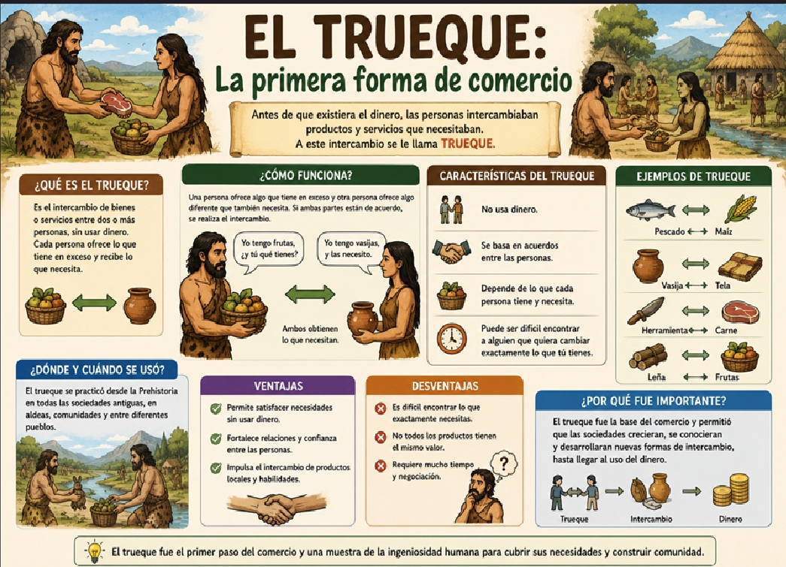
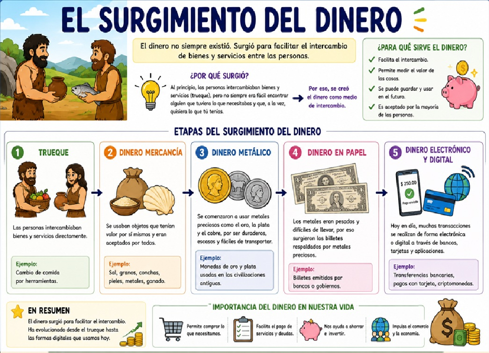
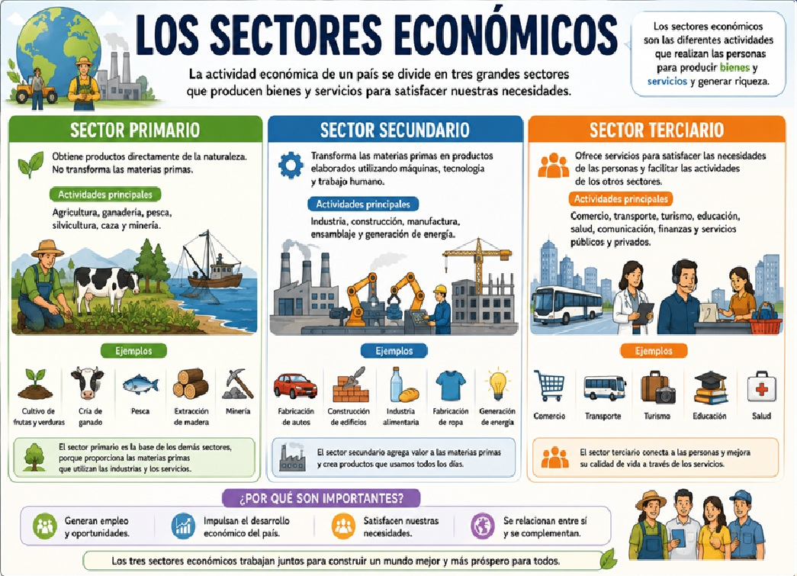

📌 Introducción
¿Alguna vez te has preguntado de dónde viene el dinero? ¿Cómo hacían las personas para conseguir lo que necesitaban antes de que existieran las monedas y los billetes? ¿Por qué unos países son más ricos que otros? Todas estas preguntas las responde una ciencia muy importante: la Economía.
La economía estudia cómo las personas, las familias, las empresas y los países administran sus recursos para satisfacer sus necesidades. En esta unidad aprenderemos cómo surgió la economía desde sus orígenes más antiguos: desde el trueque en las primeras aldeas hasta la economía globalizada de hoy. Conocerás la historia del dinero, los sectores económicos y conceptos clave como la oferta y la demanda. ¡Prepárate para entender cómo funciona el mundo que te rodea!
💡 ¿Sabías que...?
La palabra "economía" viene del griego oikonomía, que significa "administración de la casa" (oikos = casa, nomos = administración). ¡Originalmente se refería a cómo administrar los recursos del hogar!
📖 Contenido Principal
Objetivo general
Comprender el origen y la evolución de la economía a lo largo de la historia, identificando sus etapas fundamentales (trueque, dinero, sectores económicos, globalización) y reconociendo su importancia en la vida cotidiana.
Objetivos específicos
- Definir qué es la economía y por qué es una ciencia social fundamental.
- Explicar cómo funcionaba el trueque en las primeras civilizaciones y por qué surgió la necesidad del dinero.
- Identificar las etapas históricas del dinero: mercancía, metales, monedas, papel moneda, dinero digital.
- Diferenciar los tres sectores económicos: primario, secundario y terciario.
- Comprender los conceptos básicos de oferta, demanda, producción y consumo.
- Analizar cómo la globalización ha transformado la economía mundial.
📌 ¿Qué es la Economía?
La economía es la ciencia que estudia la producción, distribución y consumo de bienes y servicios. Se divide en dos grandes ramas:
🏠
Microeconomía
Estudia el comportamiento económico de individuos, familias y empresas.
🌍
Macroeconomía
Estudia la economía en su conjunto: países, producción nacional, inflación.
🔄
Producción
Creación de bienes y servicios usando recursos naturales, trabajo y capital.
⚖️
Distribución
Cómo los bienes y servicios llegan desde los productores hasta los consumidores.
📌 Línea de Tiempo: Evolución de la Economía
Observa cómo ha evolucionado la economía a través de la historia:
🔄 Trueque
💰 Dinero-mercancía
🏦 Monedas y billetes
💳 Dinero digital
🔄 1. El Trueque: La primera forma de comercio
El trueque fue la primera forma de intercambio económico en la historia de la humanidad. Surgió en la Prehistoria, cuando los grupos humanos comenzaron a especializarse en diferentes actividades.
📍 ¿Cómo funcionaba?
Las personas intercambiaban directamente bienes y servicios sin usar dinero. Por ejemplo, un agricultor que tenía excedentes de maíz podía cambiarlos por carne de un cazador, o por herramientas de un artesano.
✅ Ventajas del trueque:
- 🔹 No necesitaba dinero ni monedas.
- 🔹 Permitía obtener lo que cada uno necesitaba.
- 🔹 Fortalecía los lazos entre comunidades.
❌ Desventajas del trueque:
- 🔹 Problema de la doble coincidencia: Para que el trueque funcione, cada persona debe tener justo lo que la otra necesita y viceversa. Si un pescador quería pan, pero el panadero no quería pescado, ¡no podían intercambiar!
- 🔹 Los bienes no siempre se podían dividir (ejemplo: una vaca no se podía partir en pedazos).
- 🔹 Era difícil almacenar valor: algunos bienes se echaban a perder.
💡 Ejemplo de trueque
Imagina que vives en una aldea hace 5,000 años. Tienes 5 kilos de maíz pero necesitas una manta para el invierno. Buscas a alguien que haga mantas y que quiera maíz. Si lo encuentras, ¡puedes hacer trueque! Pero si no, tendrás que buscar a otra persona o hacer varias transacciones para conseguir lo que necesitas.

💰 2. El surgimiento del dinero
Para solucionar los problemas del trueque, las civilizaciones comenzaron a usar dinero-mercancía: objetos que tenían valor por sí mismos y que todo el mundo aceptaba como pago.
📜 El dinero en la historia:
| Época | Tipo de dinero | Ejemplos |
|---|
| Prehistoria | Dinero-mercancía | Sal, conchas marinas, semillas de cacao, ganado |
| Edad Antigua | Metales preciosos | Oro, plata, cobre (se pesaban) |
| 700 a.C. | Primeras monedas | Lidia (hoy Turquía) acuñó las primeras monedas de oro y plata |
| Edad Media | Papel moneda | China inventó los primeros billetes (dinero de papel) |
| Siglo XX | Dinero fiduciario | Billetes y monedas que valen por confianza, no por el material |
| Actualidad | Dinero digital | Tarjetas, transferencias, criptomonedas (Bitcoin) |
🧂 El trueque con sal: el origen del "salario"
¿Sabías que la sal fue una de las primeras formas de dinero? Era muy valiosa porque servía para conservar alimentos. Los soldados romanos recibían una porción de sal como pago, y de ahí viene la palabra "salario" (del latín salarium, "pago en sal").
🏦 Características del dinero moderno:
- 🔹 Aceptado universalmente: Todo el mundo lo acepta como forma de pago.
- 🔹 Divisible: Se puede dividir en unidades pequeñas (centavos, pesos).
- 🔹 Durable: No se deteriora fácilmente.
- 🔹 Portátil: Fácil de transportar.
- 🔹 Escaso: No se puede producir en cantidades ilimitadas (para que mantenga su valor).

🏭 3. Los Sectores Económicos

La economía se divide en tres sectores principales, según el tipo de actividad que se realice:
🌱 Sector Primario (Agricultura, ganadería, pesca, minería)
Es el sector que extrae recursos naturales directamente de la naturaleza. Incluye:
- 🌽 Agricultura: Cultivo de maíz, arroz, trigo, café, frutas, verduras.
- 🐄 Ganadería: Cría de vacas, cerdos, ovejas, pollos para obtener carne, leche, huevos.
- 🐟 Pesca: Captura de peces y otros animales marinos.
- ⛏️ Minería: Extracción de minerales como oro, carbón, petróleo, esmeraldas.
En Colombia, el sector primario es muy importante: somos productores de café, banano, flores, petróleo y carbón.
🏭 Sector Secundario (Industria y manufactura)
Es el sector que transforma las materias primas en productos elaborados. Incluye:
- 🏗️ Construcción: Edificios, carreteras, puentes.
- 👕 Textil: Fabricación de ropa, zapatos, telas.
- 🍞 Alimentos: Procesamiento de alimentos (pan, aceite, bebidas, conservas).
- 🚗 Automotriz: Fabricación de carros, camiones, motos.
🏪 Sector Terciario (Servicios)
Es el sector que ofrece servicios en lugar de productos físicos. Incluye:
- 🏫 Educación: Colegios, universidades, cursos.
- 🏥 Salud: Hospitales, centros médicos, farmacias.
- 🏦 Finanzas: Bancos, seguros, inversiones.
- 🛒 Comercio: Tiendas, supermercados, centros comerciales.
- 🚕 Transporte: Buses, taxis, aviones, envíos.
- 📱 Tecnología: Internet, aplicaciones, soporte técnico.
🌎 El sector terciario hoy
Hoy en día, la mayoría de los empleos en países desarrollados están en el sector terciario (servicios). Por ejemplo, en Estados Unidos y Europa, más del 75% de los trabajadores trabajan en servicios. ¡La economía ha pasado de producir cosas a ofrecer servicios!
📌 Conceptos Económicos Fundamentales
| Concepto | Definición | Ejemplo |
|---|
| Oferta | Cantidad de un producto que los vendedores están dispuestos a vender | Un agricultor ofrece 1,000 kg de café al mes |
| Demanda | Cantidad de un producto que los compradores quieren comprar | Los clientes quieren comprar 800 kg de café al mes |
| Precio | Valor de un producto o servicio en dinero | 1 kg de café cuesta $10,000 COP |
| Producción | Proceso de crear bienes o servicios | Una fábrica produce 500 pares de zapatos al día |
| Consumo | Uso de bienes o servicios para satisfacer necesidades | Las personas compran y usan los zapatos |
| Mercado | Lugar (físico o virtual) donde se encuentran oferta y demanda | Supermercado, tienda online, plaza de mercado |
| Capital | Recursos (dinero, máquinas, edificios) usados para producir | Una máquina cosechadora, el dinero para comprar insumos |
⚖️ La Ley de la Oferta y la Demanda
Cuando hay mucha demanda (muchas personas quieren comprar) y poca oferta (hay pocos productos), los precios suben.
Cuando hay poca demanda (pocos quieren comprar) y mucha oferta (hay muchos productos), los precios bajan.
Ejemplo: Si hay una sola consola de videojuegos en la tienda y 20 personas quieren comprarla, el precio será muy alto. Pero si hay 100 consolas y solo 5 personas quieren comprar, el precio bajará.
🌐 4. La Globalización Económica
La globalización es el proceso de interconexión económica, cultural y política entre los países del mundo. Hoy en día, los productos que usamos a diario provienen de diferentes partes del planeta.
🌍 ¿Qué implica la globalización económica?
- 🔹 Comercio internacional: Los países compran y venden productos entre sí (exportaciones e importaciones).
- 🔹 Empresas multinacionales: Grandes empresas que operan en varios países (Nike, Apple, Coca-Cola, McDonald's).
- 🔹 Interdependencia: Lo que ocurre en un país afecta a otros (ejemplo: una crisis en Estados Unidos afecta la economía mundial).
- 🔹 Tecnología e internet: El comercio electrónico (Amazon, Mercado Libre) permite comprar productos de cualquier parte del mundo.
- 🔹 Divisas: Cada país tiene su propia moneda (peso colombiano, dólar, euro, yen) y las personas cambian monedas para comerciar.
📦 Productos globalizados en tu casa
Mira a tu alrededor: tu celular probablemente fue diseñado en Estados Unidos, fabricado en China, con componentes de Corea del Sur, y lo compraste con una aplicación hecha en India. ¡Eso es la globalización!
| Producto | Diseñado en | Fabricado en | Materias primas de |
|---|
| 📱 Smartphone | EE.UU. / Corea | China / Vietnam | Congo (cobalto), Chile (cobre) |
| 👟 Zapatillas deportivas | Alemania / EE.UU. | Vietnam / Indonesia | Medio Oriente (petróleo), Brasil (caucho) |
| ☕ Café (tu taza de la mañana) | Colombia | Colombia | Colombia (¡y se exporta a todo el mundo!) |
📌 La Economía en Colombia
Colombia tiene una economía diversa y en crecimiento. Es un país con gran riqueza natural y una población emprendedora.
📊 Principales productos de Colombia:
- Exportaciones: Petróleo, carbón, café, flores, banano, oro, esmeraldas.
- Agricultura: Café (Colombia es el tercer productor mundial), flores (segundo exportador mundial), banano, caña de azúcar, arroz, maíz.
- Industria: Textiles, alimentos procesados, bebidas, productos químicos, cemento.
- Servicios: Turismo, finanzas, tecnología, comercio, transporte.
- Minería y energía: Petróleo, carbón, oro, esmeraldas (Colombia es el mayor productor mundial de esmeraldas).
☕ COLOMBIA Y EL CAFÉ
El café colombiano es reconocido mundialmente por su alta calidad y sabor suave. La zona cafetera (Eje Cafetero: Caldas, Risaralda, Quindío) produce uno de los mejores cafés del mundo. El café ha sido parte fundamental de la economía colombiana por más de 200 años y emplea a miles de familias campesinas.
📝 Actividades de aprendizaje
✏️ Actividad 1: El trueque en la práctica
Imagina que eres un agricultor y tienes excedentes de estos productos. ¿Con quién harías trueque para conseguir lo que necesitas?
- Tienes: 10 kg de papas. Necesitas: una camisa. ¿Con quién harías trueque?
- Tienes: 5 kg de café. Necesitas: zapatos. ¿Con quién harías trueque?
- Tienes: 1 gallina. Necesitas: una herramienta para sembrar. ¿Con quién harías trueque?
- ¿Qué problema encuentras en cada situación? ¿Por qué el dinero resuelve ese problema?
✏️ Actividad 2: Clasifica en sectores económicos
Escribe a qué sector económico pertenece cada actividad (Primario, Secundario o Terciario):
- Un agricultor cultivando café → ______________
- Un panadero horneando pan → ______________
- Un profesor dando clases → ______________
- Un minero extrayendo carbón → ______________
- Un ingeniero construyendo un edificio → ______________
- Un médico atendiendo pacientes → ______________
- Un pescador capturando atún → ______________
- Un programador creando una aplicación → ______________
✏️ Actividad 3: Preguntas de reflexión
Responde las siguientes preguntas en tu cuaderno:
- ¿Por qué crees que el trueque dejó de funcionar cuando las sociedades crecieron?
- ¿Cuál fue el invento más importante en la historia de la economía: la moneda o el billete? Explica por qué.
- ¿En qué sector económico te gustaría trabajar cuando seas grande? ¿Por qué?
- ¿Cómo crees que la globalización afecta tu vida diaria? Menciona 3 productos que uses hoy que vengan de otros países.
- ¿Por qué Colombia es conocida por su café y sus esmeraldas? ¿Qué otros productos colombianos conoces?
- ¿Qué pasaría si de repente no existiera el dinero? ¿Cómo conseguirías lo que necesitas?
✏️ Actividad 4: Investiga un producto
Elige un producto que tengas en casa (por ejemplo, tu celular, tus zapatos, un chocolate, tu cuaderno) e investiga:
- 🌍 ¿De qué país proviene?
- 🏭 ¿En qué sector económico se produce?
- 🚚 ¿Cómo llegó hasta ti?
- 💰 ¿Cuánto cuesta y por qué crees que tiene ese precio?
- ♻️ ¿Qué recursos naturales se usaron para fabricarlo?
Escribe un párrafo explicando el viaje de ese producto desde su origen hasta tus manos.